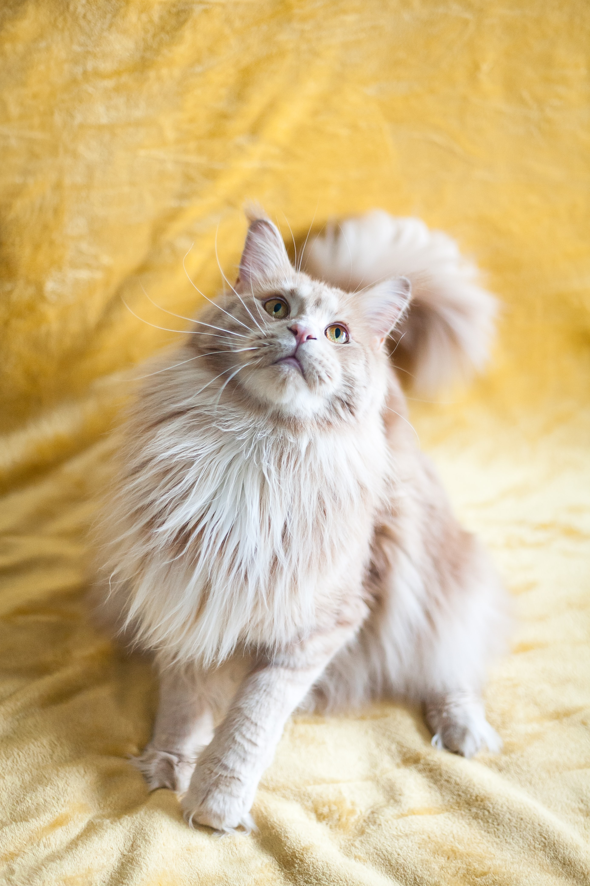
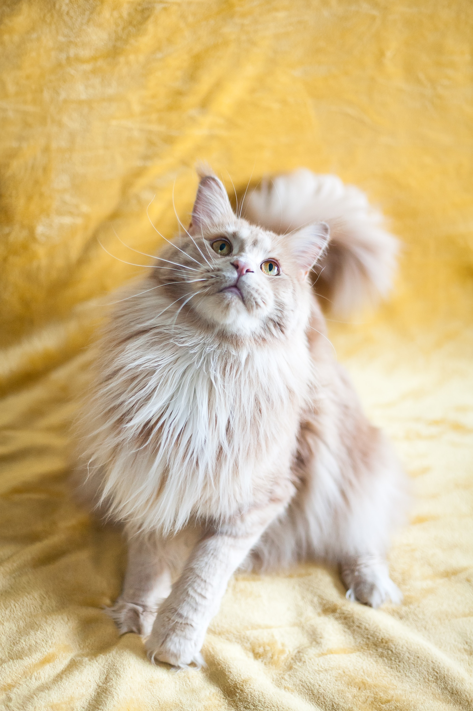
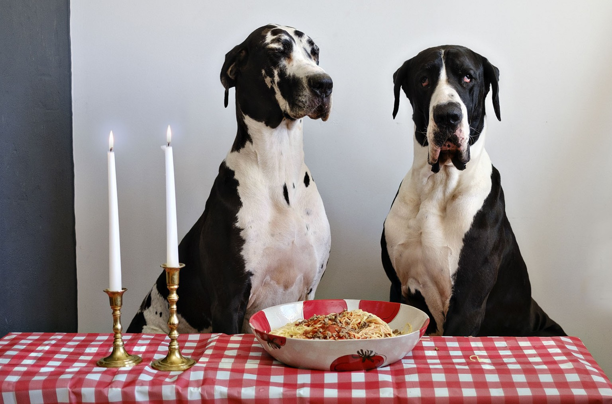
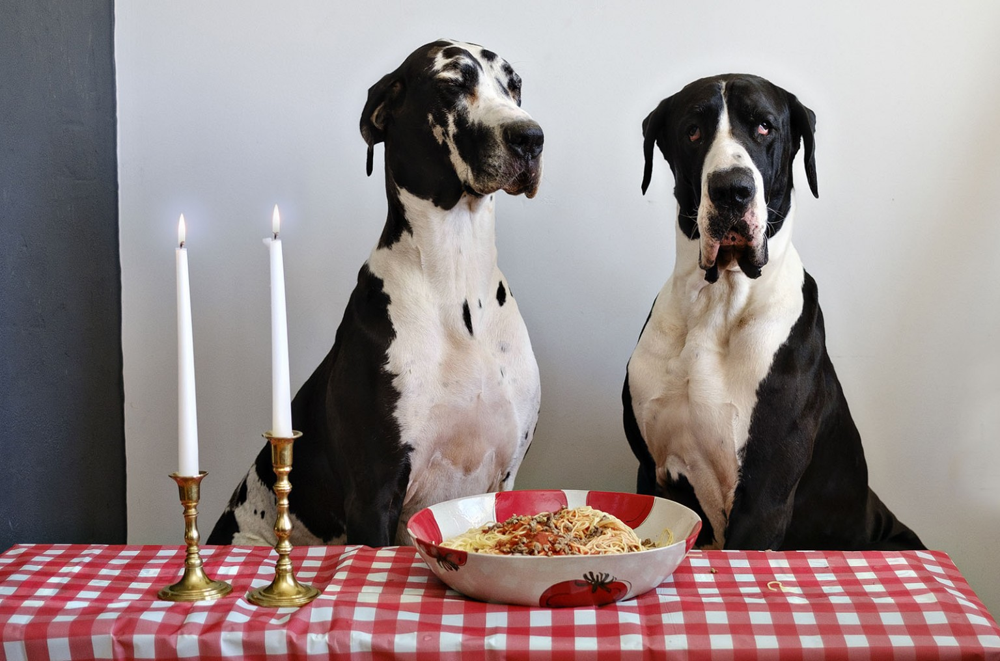

Pets I'd Like To Have
If Only I Had The Budget
 

In an ideal world, I'd have two cats - a Ragdoll and a Maine Coon - and they would be raised alongside a Sammy and two Great Danes. Unfortunately, that would mean that it would be a rather full house, and with the way the economy's currently going, I get the feeling that this would amount to nothing more than a pipe dream.
 

Regardless, I'd say it's a good dream to strive for. Pets are a whole other basket of responsibility, so I'm looking forward to having my own place someday. I mean I like my roommates, but sometimes I'd also like to unwind without taking notice of other people's arrangements (honestly, I need my space too, since I tend to cook a lot)